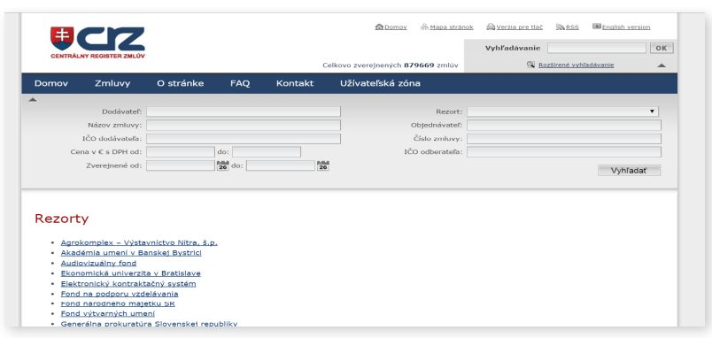
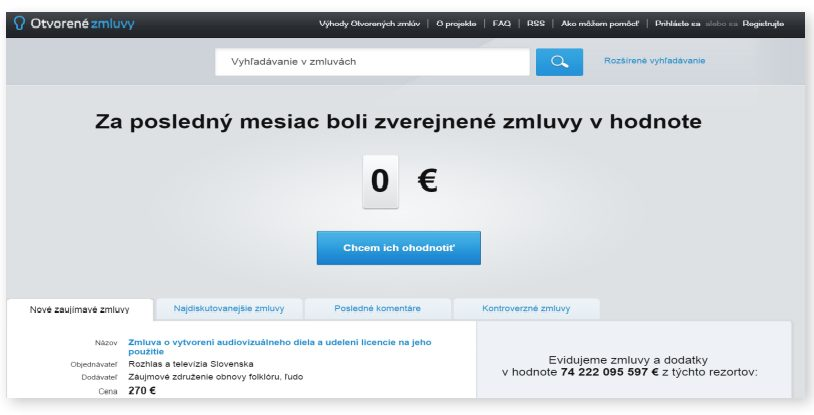
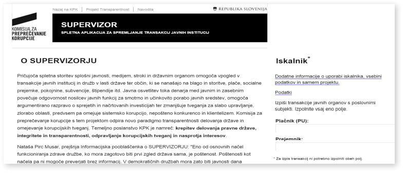

فساد یک مشکل دیرینه در اسلواکی، به خصوص در حوزه تدارکات دولتی بودهاست. در ژانویه ۲۰۱۱، اسلواکی رژیم باز بودن بیسابقهای را معرفی کرد و الزام کرد که کلیه اسناد مربوط به تدارکات عمومی (از جمله رسیدها و قراردادها) به صورت آنلاین منتشر شود و اعتبار قراردادهای عمومی را منوط به انتشار آنها کرد. به نظر میرسد که این اصلاحات، تاثیر چشمگیری بر فساد داشته و به همان اندازه برای فضای کسبوکار، درک فساد مهم است. بهطورکلی، آنها از جمله ارکان اصلی یک تلاش - در اسلواکی و اتحادیه اروپا - برای اصلاح حاکمیت و پاسخگوتر، شفافتر و کارآمدتر کردن آن هستند.
- قانون اسلواکی در سال ۲۰۱۱ برای اجرای شفافیت بیشتر در زمینه تدارکات عمومی به عنوان یکی از «مهمترین اصلاحات شفافیت در جهان» است. این قانون براساس قانون قبلی آزادی اطلاعات (FOI) بهبود مییابد و براساس تلاشهای موفق در جهت ایجاد شفافیت در سطح محلی، به ویژه در شهرداری، ساخته میشود. موفقیت قانون ملی نشان میدهد که تا چه حد سیاستهای ملی و منطقهای میتوانند به طور مثبت تحتتاثیر مقیاس کوچک، تلاشهای محلی قرار گیرند.
- یکی از مهمترین جنبههای قانون اسلواکی، فاصله گرفتن از شفافیت به دلیل تقاضا برای شفافیت به صورت پیشفرض است. سیاستهای اولیه FOI شهروندان را ملزم میکرد تا به طور فعال اطلاعات مربوط به تدارکات را درخواست کنند. براساس قانون کنونی، همه اطلاعات باید به طور پیشفرض باز شوند و شناسایی الگوهای مشکوک یا دیگر نشانههای فساد را برای شهروندان و گروههای ناظر بسیار آسانتر میکند.
- در حال حاضر بیش از ۲ میلیون قرارداد به صورت آنلاین در اسلواکی ارسال شدهاست. از آنجا که این قراردادها به طور پیشفرض برای هرکسی که دارای ارتباط اینترنتی است (حدود ۸۳ درصد جمعیت) در دسترس هستند، نظارت بر خرید و فروش و به طور کلی نظارت بر فساد در معرض یک مبنای «دانش پراکنده» گستردهتر قرار دارد. پیش از این، یک گروه منتخب از فعالان با انگیزه بالا، روزنامهنگاران یا سیاستمداران عموما در شناسایی موارد فساد دخیل بودهاند.
- برای تمام توانایی تازه کشفشده شهروندان به منظور شناسایی فساد، اسلواکی هنوز در مورد مجازات فساد و اجرای پاسخگویی تاخیر دارد. این یک یادآوری قدرتمند است که اطلاعات بیشتر و شفافیت بیشتر به خودی خود برای تغییر جوامع و فرهنگهای سیاسی کافی نیست. باز بودن بیشتر دادهها و اطلاعات باید با اصلاحات نهادی و انگیزه سیاسی همراه باشد.
- علیرغم تاثیر این قانون بر عمومی کردن قراردادها، این اطلاعات هنوز هم باید به منابع داده باز «واقعی» (برای مثال، قابل خواندن توسط ماشین و در دسترس بودن) به منظور افزایش میزان دسترسی و مشارکت شهروندان، روزنامهنگاران و جامعه مدنی تبدیل شوند. تلاشها از سوی گروههای جامعه مدنی (خصوصا شفافیت بینالمللی اسلواکی و اتحاد بازی منصفانه) هنوز هم برای استانداردسازی، حذف و افزودن قابلیت به دادههای دولتی موجود برای باز کردن آن در حال شکلگیری است. این نیز به اهمیت همکاری بین دولت و جامعه مدنی اشاره میکند
۱. پیشینه و زمینه
اسلواکی مدتها است که از مشکل فساد رنج میبرد. سالها شفافیت بینالمللی این کشور را به عنوان یکی از فاسدترین کشورهای اتحادیه اروپا رتبهبندی میکرد. براساس تحقیقی که در سال ۲۰۱۰ توسط اتحادیه تجاری اسلواکی انجام شد، فساد توسط تاجران و کارآفرینان به عنوان مانع شماره یک تجارت در کشور شناسایی شدهاست. فساد در تدارکات دولتی یکی از حوزههایی بود که به عنوان مشکلسازترین آنها شناخته شد. روبرت کیکینا، مدیر اجرایی SBA، این را اینطور بیان کرد: «تدارکات عمومی نام درستی در اسلواکی نداشت. بسیاری از مردم و شرکتها فکر میکنند که این منطقه بسیار فاسد است. شاید این سوءظنها باعث شود که بسیاری از کارآفرینان از شرکت در مناقصات خودداری کنند.»
تلاشهای اولیه برای رسیدگی به فساد شامل قانون آزادی اطلاعات (FOIA) اتخاذ شده در سال ۲۰۰۰ بود. براساس اظهارات سازمان شفافیت بینالمللی اسلواکی، این اقدام "سنگبنای شفافیت دولت شد. بااینحال، این اقدام علیرغم حسن نیت خود دارای چند کاستی بود. برجستهترین آنها این واقعیت بود که این اقدام به دنبال ایجاد شفافیت از طریق تقاضا بود. شهروندان میتوانستند به اطلاعات مربوط به قراردادها و پروژههای دولتی دسترسی داشته باشند، اما این اطلاعات به طور پیشفرض عمومی نشده بودند - شهروندان باید فعالانه درخواست میکردند. در میان مشکلات دیگر، این مفهوم شفافیت بنا به تقاضا، شناسایی یا توجه به تضاد منافع و دیگر نشانههای فساد را برای نگهبانان عمومی و روزنامهنگاران دشوار ساختهاست. به طور کلی فساد را تنها زمانی میتوان شناسایی کرد که افراد یا گروهها از قبل به وجود آن پی برده باشند و در نتیجه به طور فعال اطلاعات مرتبط را درخواست کنند. در این رابطه، اصلاحات ۲۰۱۱ نشاندهنده یک تغییر پارادایم واضح به سمت مفهوم شفافیت به طور پیشفرض بود.
جدول ۱ شامل یک توصیف روایی از برخی موارد برجسته است که مشکل فساد کشور را با وجود قانون FOIA سال ۲۰۰۰ و سایر اقدامات برجسته میکند. در حالی که بسیاری از این موارد بر فساد در تدارکات دولتی متمرکز بودند، از بسیاری جهات نشانهای از بحران کلی حاکمیت در اسلواکی بودند. در واقع، در اواخر سال ۲۰۱۱ و اوایل سال ۲۰۱۲، این کشور در تظاهرات خیابانی گستردهای علیه دولت غرق شد. در مقالهای در مورد این اعتراضات از فوریه ۲۰۱۲، فایننشال تایمز اسلواکیها را «عصبانی» و بسیاری عوامل را «نارضایتی از دوستان و فساد دولتی» توصیف کرد.
نوع قرارداد
مشکل
واکنش
ساخت و ساز
در سال ۲۰۰۷، وزارت ساخت و ساز و توسعه منطقهای اسلواکی درخواست مناقصهای را برای خدمات ساخت و ساز به مبلغ ۱۱۹.۵ میلیون یورو منتشر کرد که فقط یک نسخه چاپی آن را بر روی یک تابلوی اعلانات کوچک در راهروی داخل ساختمان وزارتخانه قرار داد. از آنجایی که این داخل ساختمان وزارتخانه بود که برای عموم آزاد نیست، تنها شرکتهایی که از قبل روابط با وزارتخانه داشتند توانستند درخواست مناقصه را ببینند. شرکتی که به داشتن روابط نزدیک با یان اسلوتا، رئیس حزب ملی اسلواکی معروف بود، در نهایت برنده قرارداد شد.
بیش از یک سال پس از این واقعیت، این رویه آشکار شد و توسط اداره تدارکات عمومی اسلواکی باطل شد.
خدمات حقوقی و روابط عمومی
همچنین در سال ۲۰۰۷، وزارت ساخت و ساز و توسعه منطقهای از یک تابلوی اعلانات برای دریافت خدمات حقوقی و روابط عمومی استفاده کرد. تنها یک کنسرسیوم متشکل از شرکتهایی که به وضوح به یکی از طرفهای دولتی مرتبط هستند به مناقصه پیوست. در نتیجه، دولت
قرارداد پرداخت ۱۲۰ میلیون یورو در طول ۹ سال را تعیین کرد. قیمت ۸۵۰۰۰ یورویی لوگوی یک آژانس به ویژه نشاندهنده سطح اضافه پرداختی دولت است.
پس از امضای قرارداد، نزدیک به یک سال گذشت تا یک رسانه این فساد را کشف و گزارش کرد. در آن مرحله، Fair Play Alliance با شرکای رسانهای برای درخواست و تجزیه و تحلیل نه تنها قرارداد، بلکه پرداختهای فردی، صورتحسابها و سایر اسناد مرتبط همکاری کرد. با توجه به رفتار شفافیت بر اساس تقاضا در آن زمان، سازمانهای نظارتی مجبور بودند برای رعایت چنین درخواستهای اطلاعاتی به دادگاهها تکیه کنند.
در پایان، فشار عمومی توسط رسانهها و سازمانهای غیردولتی تحریک شد و یک گزارش تحقیقی که توسط اتحاد بازی منصفانه برای اداره مبارزه با تقلب اروپا (OLAF) و کمیسیون اروپا تهیه شد، وزیر توسعه را مجبور کرد که قرارداد را در سال ۲۰۰۹ لغو کند.
تا ۱۲ میلیون یورو قبلاً پرداخت شده بود، اما بیش از ۱۰۰ میلیون یورو میتوانست به لطف این تلاشها پس انداز شود. این پرونده نیز توسط پلیس بررسی شده است و در دادگاه اسلواکی محاکمه خواهد شد (البته هیچ کس از سال ۲۰۱۵ مجازات نشده است).
۲. توصیف و آغاز پروژه
پیدایش قانون ملی تحت بررسی در اینجا در پاسخ به تحولات در سطح اروپا و منطقه است. ابتدا، در اسلواکی، دو شهرداری الهامبخش تاثیرگذاری برای تلاشها در جهت ایجاد شفافیت ملی بودند. در سال ۲۰۰۵، گروهی از سیاستمداران در جنوب غربی شهر «سالا» از آنچه که به نظر آنها عدم شفافیت در دفتر شهردار بود، ناامید شدند. در پاسخ، آنها شروع به انتشار قراردادهای عمومی مرتبط با تجارت شهری در وبسایت خود کردند. وقتی یک سال بعد، این گروه در انتخابات شورای شهر قدرت را به دست آورد، این تلاشها را گسترش داد و «سالا» اولین شهرداری در اسلواکی شد که تمام قراردادهای عمومی و رسیدها را به صورت آنلاین منتشر کرد. در همان زمان، در شهر شمالی مارتین، شهردار (آندریج هنریکر)، با اشاره به (Sala) به عنوان مورد الهامبخش، به طور مشابه شروع به انتشار قراردادها و رسیدها به صورت آنلاین کرد.
این کشور نیاز به بخش عمومی و قدرت دارد که توسط ۵ میلیون شهروند اسلواکی کنترل شود.
Miroslav Beblavy, Slovak National Council
این تلاشها بسیار محبوب بودند، و هر دو شهردار متعاقباْ دوباره انتخاب شدند. آنها نشانهای از آنچه که از طریق تلاشهای شفافیت فعال امکانپذیر بود را برای ملت فراهم کردند. در اواخر سال ۲۰۱۰، زمانی که وزیر دادگستری اسلواکی در حالی که در مورد قوانین جدید ایجاد شفافیت بحث میکرد با پارلمان صحبت کرد، او به زمینه این دو شهرداری ادای احترام کرد: "من فکر میکنم مهم است که به ما یادآوری کنیم که ما از شهرداریها الهام میگیریم، که به ما نشان دادند که داشتن قرارداد، دستور و رسید آنلاین هیچ مشکلی ایجاد نمیکند. در مقابل، قابلیت اعتماد رهبری شهر را افزایش میدهد و همچنین اثربخشی و پاسخگویی را در هنگام برخورد با منابع شهرداری تضمین میکند.
قانون، معروف به قانون شماره ۵۴۶/۲۰۱۰ Coll مکمل قانون شماره ۴۰/۱۹۶۴، در ۱ ژانویه ۲۰۱۱، به دنبال بهروزرسانی دستورالعملهای تدارکات اتحادیه اروپا که شامل اصلاحاتی مانند مکانیسمهای حراج معکوس برای تدارکات و دستورالعملهایی برای مخازن قراردادهای متمرکز بود، اجرایی شد. برخلاف قانون FOI موجود اسلواکی، این قانون بر افزایش شفافیت و باز بودن فعال دولت متمرکز بود. براساس قانون جدید، دولت باید تقریبا همه قراردادها، رسیدها و سفارشات را به صورت آنلاین منتشر میکرد، بدون توجه به اینکه آیا یک شهروند درخواست فعال برای اطلاعات کردهاست یا خیر. مهمتر اینکه، قراردادهای دولتی معتبر در نظر گرفته نشدند مگر اینکه ظرف سه ماه پس از امضای آنها منتشر شوند.
به ناچار، برخی زورگوییها و مخالفتها با قانون وجود داشت. برخی از مهمترین شکایات از شهرداران در سطح شهرداری بود که نگران برآورده کردن الزامات مختلف قانون بودند، به خصوص با منابع فنی و مالی بسیار محدود خود. شهرداران به طور خاص نگران بودند که قانون نیاز به این دارد که تمام رسیدها و سفارشات در شهرداریهای آنها در اداره مرکزی ثبت در دسترس قرار گیرد، که این الزام به نظر آنها بسیار طاقتفرسا است. در ژانویه ۲۰۱۲، این الزام لغو شد و در حال حاضر تنها متاداده باید بر روی ثبت پست شود. پس از تصویب این قانون، طیف گستردهای از اسناد به صورت آنلاین در دسترس قرار گرفتند. اینها هم در سطح ملی، در ثبت مرکزی قراردادها (یا CRZ: https://www.crz.gov.sk/) و هم در سطح شهرداری منتشر شدند. اسناد منتشرشده شامل تمام اطلاعات تدارکات، از جمله احکام قضایی، قراردادها و رسیدهای مربوط به نهادهای دولتی مانند مدارس روستایی، زندانها، وزارتخانهها و نهادهای مختلف دیگر است. شاید به طرز شگفتآوری، مسائل فنی و مالی جزئی بودند و کل فرآیند در عرض دو ماه تکمیل شد.
با این وجود، نگرانیهایی در مورد دامنه اسناد موجود در پورتال باقی ماندهاست. برای مثال، حدود ۲۰ معافیت برای اسنادی که باید پست شوند وجود دارد و این شامل اسناد مربوط به قراردادهای استخدام، امنیت ملی، زندگی خانوادگی و مزایای بیکاری است. علاوه بر این، در پاسخ به نگرانیهای مطرحشده توسط شرکتهای دولتی در مورد نیاز به حفاظت از منافع تجاری (به عنوان مثال، قیمتگذاری در اسناد قرارداد)، معافیت همچنین اطلاعات تجاری خاصی را پوشش میدهد. به گفته چارلز کنی، از زمان راهاندازی این پورتال، معافیت از انتشار دادهها به سرعت افزایشیافته است. علاوه بر این، یک مطالعه توسط سازمان شفافیت بینالمللی نشان داد که از میان ۱، ۱۰۰ قرارداد شرکت دولتی و شهرداری موجود در این مطالعه، تقریبا یکپنجم آنها به طور کامل منتشر نشدهاند.
علاوه بر این، یک محدودیت اصلی ثبت این است که تنها دادهها را منتشر میکند اما ابزارهای لازم برای تجزیه و تحلیل آن دادهها را شامل نمیشود. در پاسخ به این کمبود، اسلواکی، یک کنسرسیوم از گروههای جامعه مدنی، سایت جدیدی را راهاندازی کرد (www.otvoretimluvy.sk) که بر روی دادههای ثبت مرکزی ایجاد شدهبود و قابل جستجو بود و طیف وسیعی از ابزارهای تحلیلی را ارائه میداد. اکنون قراردادها هر شب تحلیل و آپلود میشوند.

علیرغم این کاستیها (و سایر موارد)، قانون اسلواکی در حال حاضر به عنوان یکی از بلندپروازانهترین و پیشگیرترین رویکردهای موجود به قانون شفافیت شناخته میشود. به عنوان مثال، گابریل سیپوس از سازمان شفافیت بینالمللی اسلواکی، آن را در میان «چشمگیرترین اصلاحات شفافیت در جهان» قرار دادهاست. علیرغم تردیدهای اولیه در میان برخی از بازرگانان (که نگران انتشار اطلاعات حساس تجاری هستند) و سیاستمداران (که از دیوان سالاری دیجیتال و جدید میترسیدند)، حمایت از زمان آغاز به کار قانون افزایشیافته است. همانطور که میروسلاو ببلاوی، سیاستمدار مطرح، گفتهاست: «متاسفانه، این کشور به بخش دولتی و کسانی که در قدرت هستند، نیاز دارد تا توسط ۵ میلیون شهروند اسلواکی بررسی شوند.»
۳. تاثیر
نتایج قانون شفافیت اسلواکی قابلتوجه بوده و بر طیف وسیعی از ذینفعان تاثیر گذاشتهاست. تاثیرات را میتوان براساس چهار دسته ارزیابی کرد: مشارکت و استفاده، فساد و ادراکات فساد، آگاهی و نظارت شهروندان، و انتشار منطقهای.
میانگین شهروندان:
چارچوب قانونی برای استفاده کارآمدتر و شفافتر از پول مالیاتدهندگان
استفاده سالانه از این پلتفرم در ۸ درصد جمعیت است، که در سال اول ۱۱ درصد گزارش شدهاست.
۹۰۰۰۰ «کاربر» که حداقل پنج فیلم مستند عمومی را بررسی کردهاند.
کسب و کار
جامعه و کارآفرینان
انجمنهای تجاری (از جمله اتاق بازرگانی ایالاتمتحده در اسلواکی)تا حد زیادی حامی این قانون جدید بودند.
هدف این قانون پرداختن به شرایط دشوار کسبوکار اسلواکی است: سهولت انجام فهرست کسبوکار بانک جهانی، اسلواکی را در رده پایین ۱۰۰ برای چهار شاخص کلیدی قرار میدهد. پیش از تصویب این قانون، فساد از سوی تاجران به عنوان مانع شماره یک برای تجارت در کشور شناخته میشد.
رسانهها و گروههای ناظر
رسانهها به عنوان بزرگترین حامیان و ذینفعان قانون جدید دیده میشوند.
۲۵ درصد افزایش در داستانهای مربوط به تدارکات در رسانههای اصلی
افزایش تنوع و منبع «نکاتی» که روزنامه نگاران دریافت کردهاند به عنوان شهروندان عادی اکنون میتوانند نمونههای فساد احتمالی را شناسایی کنند.
افزایش کلی تعداد سازمانهای غیر دولتی و دامنه کاری گروههای ناظر در نتیجه این قانون
تعامل و استفاده
چندین شاخص به استفاده قابلتوجه شهروندان، روزنامهنگاران و دیگر اسناد ثبتشده مرکزی (CRZ) و پستشده در سطح شهرداری اشاره دارند. این موارد عبارتند از:
قراردادهای منتشر شده: بین سالهای ۲۰۱۱ و ۲۰۱۴، بیش از ۷۸۰۰۰۰ قرارداد در قالب باز و قابل خواندن توسط ماشین در CRZ منتشر شدند. دادههای ۱.۲ میلیون نفر دیگر توسط مقامات شهرداری منتشر شدند. بیشترین تعداد قراردادها توسط Všeobecná zdravotná poisťovňa، شرکت اصلی بیمه سلامت دولتی، و پس از آن RTVS، پخشکننده ملی، و Národná diaľničná spoločnosť، اپراتور بزرگراه دولتی منتشر شد. در حدود یکچهارم قراردادها بیش از ۱۰۰۰ یورو بود، در حالی که ۳ درصد برای قراردادهایی با بیش از ۱۰۰۰۰۰ یورو بود.
استفاده شهروندان و دسترسی به پورتال: در سالهای قبل از تصویب قانون شفافیت جدید، کمتر از ۵ درصد شهروندان از قوانین FOI برای درخواست اطلاعات از سازمانهای دولتی استفاده میکردند. براساس بررسیهای انجامشده توسط سازمان شفافیت بینالمللی اسلواکی، ۱۱ درصد از جمعیت این کشور در سال اول زندگی خود به این درگاه دسترسی داشتهاند و در سالهای بعد به طور متوسط ۸ درصد از جمعیت این کشور به این درگاه دسترسی داشتهاند. پورتال رسمی CRZ همراه با otvorenezmluvy.sk، یک پورتال غیررسمی قراردادهای باز که توسط Transparency International Slovakia و Fair Play Alliance اداره میشود، تقریباً ۵۴۰۰۰ بازدیدکننده در ماه را به خود جلب میکند. به طور قابلتوجهی، این رقم از سال ۲۰۱۲ تا یکسوم افزایشیافته است، که نشان میدهد آگاهی شهروندان و استفاده از دادههای پورتال در حال شتاب گرفتن است.

تصویر کاملتری از استفاده از شهروندان را میتوان از دادههای تحلیل گوگل که توسط سازمان شفافیت بینالمللی اسلواکی فراهم شدهاست، تعیین کرد. اگرچه میانگین بازدیدکنندگان از سایت کمتر از دو دقیقه را در سایت سپری میکند (1m44s)، ۲درصد از جلسات (یا ۱۷۰۰۰۰ بازدیدکننده) بیش از ۱۰ دقیقه را صرف میکنند. علاوهبراین، ۲۰درصد از بازدیدکنندگان در حال بازگشت هستند که نشاندهنده وجود یک گروه متعهد از گروههای ناظر ایجاد شفافیت و مشاغل افراد است. بااینحال، ماریا زوفووا، یک محقق در موسسه حاکمیت اسلواکی، معتقد است که سطح بالای بازدید بازدیدکنندگان در هر ماه میتواند به تعداد زیادی از افرادی اشاره کند که در موسسات دولتی در حال بازدید از این سایت با ظرفیت رسمی، مانند آپلود قراردادها و رسیدها در هر ماه، کار میکنند.
فساد و درک موضوع فساد
ارزیابی میزان فساد، بسیار دشوار است. با طبیعت خود، پنهان است، و ثبت آن بسیار چالشبرانگیز است. با این وجود، برخی از شاخصها به تاثیر مثبت قانون اشاره میکنند.
این موارد عبارتند از: در سال ۲۰۱۴ شاخص ادراک فساد که توسط شفافیت بینالمللی منتشر شد، اسلواکی رتبه خود را تا شش رتبه افزایش داد و به ۵۴ رتبه رسید. این نشاندهنده جهش ۱۲ امتیازی از سال ۲۰۱۱ بود که اسلواکی را به یکی از کشورهای بهبودیافته در آن دوره تبدیل کرد.
شاخص شفافیت بینالمللی متکی بر درک فساد است. اما برخی شاخصهای عینی نیز تاثیر قانون را نشان میدهند. به عنوان مثال، در حالی که تنها ۲ درصد از مناقصات به صورت الکترونیکی پیش از اجرای قانون انجام میشد، اکنون تقریبا نیمی از آنها به این شیوه انجام میشوند. علاوه بر افزایش شفافیت، این امر منجر به مناقصه رقابتیتر نیز شدهاست - میانگین یک پیشنهاددهنده اضافی در هر قرارداد، که به نوبه خود قیمت قرارداد را حدود ۲ تا ۳ درصد کاهش میدهد.
رقابت مزایده در قراردادهای عمومی را میتوان به عنوان نمایندهای برای فساد در نظر گرفت. بین سالهای ۲۰۱۰ و ۲۰۱۴، میانگین تعداد پیشنهاددهندگان قراردادهای تدارکات دولتی در اسلواکی بیش از دو برابر شد - از ۱.۶ شرکت به ۳.۷ شرکت.
مرکز تحقیقات اروپا برای مبارزه با فساد و ایجاد دولت (ERCAS)، با اشاره به مطالعات انجامشده توسط بنیاد نور خورشید، در سال ۲۰۱۳ به این نتیجه رسید که «به طور کلی، پرونده اسلواکی از این ایده حمایت میکند که شفافیت ممکن است برای مبارزه موثر با فساد لازم باشد، اما کافی نیست.» ERCAS حوزههای پیشرفت را در نتیجه قانون جدید شناسایی میکند، اما همچنین پیروی و اجرا (موضوعاتی که ما در زیر بحث میکنیم) را به عنوان حوزههای نگرانی باقیمانده ذکر میکند.
آگاهی و نظارت شهروندی
فراهم کردن اطلاعات در دسترس در مورد تدارکات تنها یک گام اولیه - اگر مهم باشد - است. تاثیر اصلاحات اسلواکی در نهایت با میزان استفاده گروههای شهروندی و جامعه مدنی از این اطلاعات برای اجرای پاسخگویی بر رهبران آنها تعیین خواهد شد. در این رابطه، نشانههای اولیه دلگرمکننده هستند. گزارش رسانهها در مورد تدارکات از زمان تصویب اصلاحات (براساس گزارش) به میزان ۲۵ درصد در طول چهار سال گذشته افزایشیافته است و اسلواکی نیز شاهد افزایش قابلتوجهی در فعالیت گروههای ناظر و سازمانهای غیردولتی بودهاست که برای محدود کردن فساد کار میکنند. همانطور که Eva Vozárová از Fair Play Alliance خاطرنشان میکند: «دسترسی به قراردادها به یک منبع عادی برای روزنامهنگاران و گروههای جامعه مدنی تبدیل شده است.»
انتقال از رویکرد شفافیت به تقاضا و به شفافیت به طور پیشفرض، تاثیر قدرتمندی بر نحوه شناسایی نمونههای فساد توسط شهروندان و گروههای ناظر داشتهاست. قبلا، فساد باید از طریق درخواستهای FOI، اغلب توسط افراد یا گروههایی که مقدار مشخصی از دانش از قبل موجود داشتند، شناسایی میشد. با این حال، تحت سیستم جدید، فساد را میتوان به صورت منفعلانهتری شناسایی کرد، برای مثال توسط شهروندانی که به بینظمیهای آشکار در حین استفاده آنلاین از قراردادها توجه میکنند. این امر منجر به تعداد بسیار بیشتری از نکات شدهاست، که اغلب توسط شهروندان عادی به روزنامهنگاران منتقل میشود، که به نوبه خود تحقیق میکنند و خواستار پاسخگویی هستند.
به طور کلی، یک حرکت به سمت آنچه که یک گزارش آن را «دانش پراکنده» مینامد، صورتگرفته است - تعداد بیشتری از نقشآفرینان، از زمینههای متنوع، در فساد پلیس دخیل هستند. این انتشار نظارت، به دور از گروه منتخب مبارزان فساد به شهروندان، شاید یکی از مهمترین تاثیرات اصلاحات شفافیت ۲۰۱۱ اسلواکی باشد.
انتشار منطقهای
مانند بسیاری از مطالعات موردی بررسی شده در این مجموعه، موفقیت این تلاش داده باز خاص نیز با تاثیر منطقهای آن نشان داده میشود. اصلاحات شفافیت اسلواکی به طور گستردهای به عنوان مدلهایی برای اروپا و فراتر از آن مورد استقبال قرار گرفتهاست. در حالی که ارزیابی اینکه آیا یک ایده به طور صریح شبیهسازی میشود یا زمان یک ایده به سادگی رسیدهاست دشوار است، بسیاری از مراحل خاص در آن اصلاحات در کشورهای همسایه رخ میدهند:
در آگوست ۲۰۱۱، اسلوونی قانونی را تصویب کرد که انتشار انواع خاصی از قراردادهای خرید را اجباری میکرد. بنا به گفته کمیسیون جلوگیری از فساد دولت اسلوونی، این قانون، مانند اسلوواکی، نتیجه مستقیم ناکامی سیاسی با فساد، به ویژه در سطح قراردادها و مناقصات دولتی بود. علاوه بر این، چنین سرخوردگی در سال ۲۰۱۰ توسط تجزیه و تحلیل دولت از داده اداره پرداخت عمومی که سطوح بالایی از فساد را آشکار کرد، قانونی شد.
نتیجه این قانون، پورتالی به نام "Supervizor" بود که اطلاعاتی را در مورد معاملات تجاری نهادهای بخش دولتی، از جمله نهادهای قانونی، قضایی و اجرایی آژانسهای سطح جامعه از جمله موسسات عمومی و غیره فراهم میآورد. این پروژه توسط کمیسیون جلوگیری از فساد جمهوری اسلوونی و شرکای وزارت دارایی اسلوونی، اداره پرداختهای عمومی جمهوری اسلوونی و آژانس جمهوری اسلوونی برای سوابق حقوقی عمومی و خدمات مرتبط توسعه یافت. این درگاه در حال حاضر حاوی دادههایی است که به سال ۲۰۰۳ باز میگردد (درست قبل از پیوستن اسلوونی به اتحادیه اروپا) و انواع مختلفی از اطلاعات را نشان میدهد، از جمله در مورد طرفهای قرارداد و دریافتکنندگان بزرگ سرمایه. دادهها در گراف یا نسخه چاپی برای دورههای زمانی مشخص در دسترس هستند. محتوای آن توسط یکی از خبرنگاران به عنوان "نفس هوای تازه" توصیف شده است.

در سال ۲۰۱۵، جمهوریچک اصلاحیهای مشابه با قانون خود در قراردادهای عمومی، و همچنین حکمی در مورد انتشار اخطارها را تصویب کرد، و اعتقاد بر این است که حداقل تا حدی براساس قانون اسلواکی است. این قوانین دستورالعملهای جدیدی را برای مزایدههای مناقصه قرارداد دولتی تعریف میکنند و همه قراردادهای امضا شده برای بخش خاصی از پیمانکاران فرعی مسئول باید به عموم عرضه شوند. اکنون لازم است که اطلاعات قرارداد در پورتال داده تدارکات کشور، Vestnik Verejnych Zakazek، منتشر شود. دولت جمهوریچک «کامپیوتری کردن فاکتورها در بخش دولتی و افشای شفاف هزینههای پرداختشده از پول مالیاتدهندگان، از جمله قراردادهای مقیاس کوچک» را در میان اولویتهای کلیدی خود شناسایی کردهاست.
۴. چالشها
اسلواکی در تلاشهای خود برای افزایش میزان شفافیت، کاهش فساد و بهبود حکمرانی، مسافت زیادی را طی کردهاست. اصلاحاتی که انجام دادهاست، یک مثال برجسته از این است که چگونه اطلاعات باز و در دسترس میتوانند اثرات قدرتمند اجتماعی، اقتصادی و سیاسی داشته باشند.
با این وجود، انتقال کشور به یک جامعه بازتر و شفافتر هنوز در حال انجام است، اصلاحات خودشان در حال پیشرفت هستند و کارهای زیادی باید انجام شود. اگر اسلواکی قرار است در مسیری که خود تعیین کردهاست ادامه دهد، باید بر چالشهای متعددی غلبه کرد. سه مورد زیر، از مهمترین موارد هستند:
کیفیت داده
برای تمام اطلاعات موجود در مورد تدارکات عمومی (بیش از ۲ میلیون قرارداد در حال حاضر منتشر شدهاست)، کیفیت آن اطلاعات یک نگرانی باقی میماند. براساس یک نظرسنجی، تقریبا ۱۰ درصد قراردادهای منتشر شده در اسلواکی حداقل یک بخش از اطلاعات کلیدی را از دست دادهاند. مطالعه دیگر نشان داد که یک چهارم قراردادها «موضوع» را از دست داده بودند، ۱۲ درصد اطلاعات مربوط به قیمت را از دست داده بودند، و در ۴ درصد قراردادها نام طرف مقابل اصلاح شدهبود. گروه جامعه مدنی در اسلواکی شکایت دارند که آنها زمان و منابع زیادی را صرف پاک کردن دادهها میکنند و اغلب آن را در سایت خود یا پورتالهای غیررسمی منتشر میکنند. با هدایت این تلاشها در تحلیل اسناد و شناسایی معاملات مشکوک، منافع عمومی بهتر تامین خواهد شد.
توانایی عمومی برای جستجو و تجزیه و تحلیل قراردادها نیز به دلیل عدم وجود فراداده و ارتباط داخلی بین پایگاههای داده مختلف محدود میشود (به عنوان مثال، پایگاههای داده حاوی اخطارهای مناقصه و صورتحسابها و رسیدهای مربوط به آن مناقصه). علاوه بر این، اصلاحات در قراردادها اغلب در انزوا، بدون ارتباط با قرارداد اصلی منتشر میشوند، که درک زمینه کامل یا تاریخچه یک فرآیند خرید خاص را دشوار میسازد. جامعه مدنی نقش حیاتی در تبدیل داده عمومی در مورد تدارکات به داده باز ایفا کردهاست که برای مصرف عمومی قابل خواندن توسط ماشین و در دسترس است. همانطور که Eva Vozárová و بسیاری از روزنامهنگاران دخیل در نقشآفرینی منابع دادهباز در طی دهه گذشته اشاره کردهاند، حتی زمانی که دادههای دولتی منتشر میشوند، اغلب در قالبهای قابلاستفاده در دسترس نیستند. به عبارت دیگر، داده هنوز به طور کامل باز نیست: آن در سراسر وبسایتهای مختلف پراکنده شدهاست، برای دانلود در دسترس نیست، و در قابلیت جستجو یا استانداردسازی محدود است (برای مثال، مقایسه پایگاهداده متقابل را ممکن میسازد).
درگاه otvoretimluvy.sk که در بالا ذکر شد، که توسط سازمان شفافیت بینالمللی و اتحادیه بازی منصفانه اداره میشود، نقشی حیاتی در تکمیل این داده دولتی ایفا میکند. مدیران آن دادهها را از دفاتر ثبت دولتی جمعآوری میکنند و عملکرد را اضافه میکنند، از جمله جستجوی متن کامل، تجزیه و تحلیلهای اساسی و توانایی نشان دادن اشتباهات احتمالی یا قراردادهای مشکلساز. درگاه تدارکات باز اسلواکی شفافیت بینالمللی به طور مشابه بر روی داده تدارکات عمومی در دسترس ساخته میشود و «هزینههای تدارکات را توسط فروشندگان، تامینکنندگان، بخشها و مناطق تجسم میکند و همچنین داده تدارکات ساختاری قابل دانلود را به صورت عمده فراهم میکند.» این عملکردهای اضافهشده به هر دو سازمان اجازه میدهد تا تجزیه و تحلیل گستردهتری از دادههای دولت را در میان متغیرهای کلیدی انجام دهند.
هزینه (و درک هزینه)
زمانی که این قانون مورد بحث قرار گرفت، یکی از مهمترین نگرانیها، هزینههای بالقوه اصلاحات بود. بهطورخاص، شهرداریهای کوچکتر از چیزی که برخی آن را «بروکراسی دیجیتال» جدید مینامند، نگران این مسائل بودند. نگرانیها در درجه اول به هزینههای انسانی مربوط میشد، زیرا هزینههای مالی ساخت و نگهداری پورتال قراردادها (و سایر سایتها و فناوری مرتبط) ناچیز بوده است: فقط ۲۰٬۰۰۰ یورو برای راهاندازی آن و ۳٬۰۰۰ یورو اضافی برای نگهداری آن به برآورد یکی از تکنسینهای درگیر (۴۵۰۰ یورو دیگر برای بهروزرسانی پورتال در چهار سال اول هزینه شد).
در واقع، با توجه به مطالعهای که توسط بخش ایجاد شفافیت بینالمللی اسلواکی انجام شد، هزینههای انسانی و اجرایی برای بیشتر شهرداریها به طور غیرمستقیم اثبات نشدهاند. مسلما، در برخی موارد، به ویژه در آن مناطق با نرمافزار یا سختافزار منسوخ، آپلود و نگهداری سوابق تمام قراردادها چالشبرانگیز بودهاست. علاوه بر این، موسسات خاصی (به عنوان مثال آرامگاهها، خوابگاهها و سازمانهای مسئول تامین آب) به دلایل مختلف، مطابقت با این قانون را دشوارتر یافتهاند. مقامات در بسیاری از موارد با افزایش تعداد معافیتهای تحت قانون واکنش نشان دادهاند و به آنهایی که انطباق با قانون را تایید کردهاند اجازه دادهاند تا از آپلود کردن برخی سوابق خودداری کنند.
در برخی موارد، معافیت وجود داشته و باید به انواع خاصی از سازمانها اعطا شود. بااینحال، این موارد باید محتاطانه و عاقلانه اعطا شوند، زیرا همانطور که در بالا توضیح داده شد، نگرانی در مورد اعطای بیش از حد معافیت از زمان آغاز قانون وجود دارد.
اجرا و پاسخگویی (عامل انسانی)
قانون اسلواکی از بسیاری جهات به گونهای نمونه بوده که بر شفافیت تاکید دارد. به طور مکرر، روزنامهنگاران و گروههای جامعه مدنی توانستهاند از این قانون برای روشن کردن موارد فساد که احتمالا پیش از قانون جدید پنهان مانده بودند، استفاده کنند.
با این حال، به طور متناقض، اسلواکی نشاندهنده اصل کلیدی دیگری نیز هست: اینکه شفافیت به تنهایی کافی نیست. سازمانهای رسانهای و گروههای ناظر همواره به این نکته اشاره کردهاند که حتی زمانی که موارد فساد مورد توجه عموم قرار میگیرند، اغلب مجازات نمیشوند. تقویت شفافیت با افزایش مشابه در قدرت اجرا یا ظرفیت سازمانی برای اجرای پاسخگویی همراه نبوده است. همان طور که پیتر کوب، از اتحادیه بازی جوانمردانه اسلواکی، اشاره میکند:
یکی از درسهایی که ما از انتشار دادهها آموختیم این است که انتشار داده توسط دولت بسیار مهم و حیاتی است اما این تنها بخشی از موفقیت است. بخش دوم این است که موسسات دیگر در جامعه و دیگر جنبههای جامعه نیاز به کار دارند - قوه قضائیه، پلیس و بخشهای عمومی - و این در حال حاضر مشکل بزرگتری در اسلواکی نسبت به انتشار اطلاعات است.
۵. نگاهی به مسائل پیش رو
به منظور پرداختن به چالشهای فوق و حفظ حرکت ایجادشده توسط قانون و دسترسی به دادهها در جهت کاهش معنیدار فساد، اسلواکی باید چندین مسیر را در نظر بگیرد.
همکاری بینبخشی در مورد کیفیت داده
همکاری بیشتر بین گروههای جامعه مدنی و دولت برای بهبود کیفیت داده و باز کردن دادههای عمومی، حیاتی است. بررسی مداوم کیفیت از طریق چنین همکاری میتواند کمک کند تا اطمینان حاصل شود که دادههای منتشر شده کامل و قابلاستفاده هستند. علاوه بر این، چنین پورتالهای مشارکتی، به شهروندان اجازه میدهد تا در بررسی دقیق دادهها و خطاهای گزارشدهی مشارکت کنند.
علاوه بر این، توسعه بررسیهای کیفیت داده خودکار، میتواند به کاهش مسائل مربوط به داده کمک کند. برای مثال، مرکز اطلاعات مراقبتهای اجتماعی بهداشت و درمان بریتانیا، از یک فرآیند خودکار برای تفکیک انواع آمار اپیزود بیمارستانی استفاده میکند.
آموزش و شناسایی بهترین اقدامات
با توجه به بسیاری از زیرساختهای فنی مورد نیاز در حال حاضر، باید به «عامل انسانی» - آموزش کارکنان، حصول اطمینان از تامین تجهیزات مناسب، و تسهیل تبادل دانش بین شهرداریهای مختلف برای ایجاد بهترین شیوهها و دستورالعملهای دیگر برای استفاده از پورتال قراردادها توجه شود.
نظارت بر سازگاری
برای کمک به حصول اطمینان از پاسخگویی مداوم، اسلواکی میتواند ایجاد نهادی درون دولت را در نظر بگیرد که بر نظارت بر مطاوعت در قرارداد متمرکز است، شاید با همکاری سازمانهای غیردولتی مانند اتحاد بازی عادلانه و شفافیت بینالمللی. چنین سازمانی باید قدرت اعمال تحریمهای تنبیهی (و جنایی) در صورت تضمین را داشته باشد.
با این حال، راه حل نمی تواند به سادگی با نهادهای جدید، همراستا باشد. موسسات موجود مانند پلیس و قوهقضاییه باید مدرنسازی شوند و برای اجرای قانون شفافیت کشور آموزش ببینند. تمام نیروهای دولتی باید با هم کار کنند.
تا کنون، فشار عمومی اغلب برای دولت و پاسخگویی اجباری در زمانی که نهادهای رسمی از اقدام خودداری کردهاند، باقی ماندهاست. عموم مردم (از جمله شهروندان، سازمانهای غیردولتی، گروههای ناظر و سازمانهای رسانهای) در تضمین پاسخگویی حیاتی باقی خواهند ماند و در نتیجه باید حمایت و تشویق شوند. این تا حدی به معنای حفظ اکوسیستم وسیعتر آزادی بیان، مخالفت و حق تظاهرات است، هدفی که اسلواکی به پیشرفت خود ادامه میدهد، اگرچه چالشها باقی میمانند - مانند استفاده گسترده از دادخواست توهین توسط قدرت مخالفت. حمایت شدید از چنین آزادیهای مدنی بخش مهمی از تضمین پاسخگویی سیاسی در هر جامعهای است.
اسلواکی بدون تردید از طریق رویکرد دوگانه مبتنی بر قانونگذاری و فنآوری، گامهای مهمی در جهت مبارزه با فساد برداشته است. در حالی که اقدامات انجامشده تا به امروز، وعده بزرگی را نشان دادهاند و در واقع، به نظر میرسد که بر فساد در کشور تاثیر دارند، آنها باید به عنوان اولین گامها در طول مسیر طولانی تری از شفافیت، پاسخگویی و مشارکت شهروندان دیده شوند.